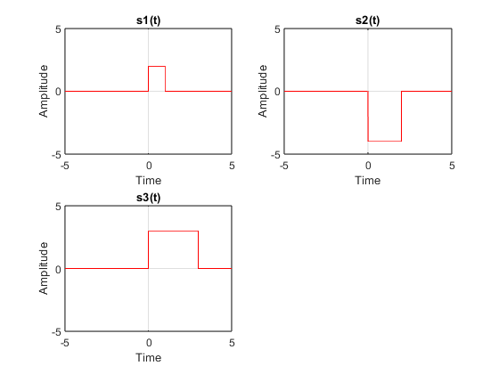
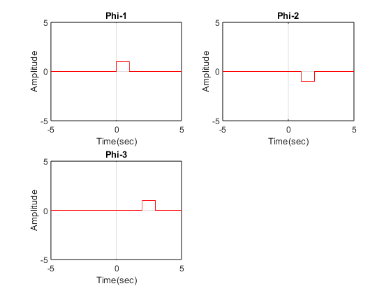
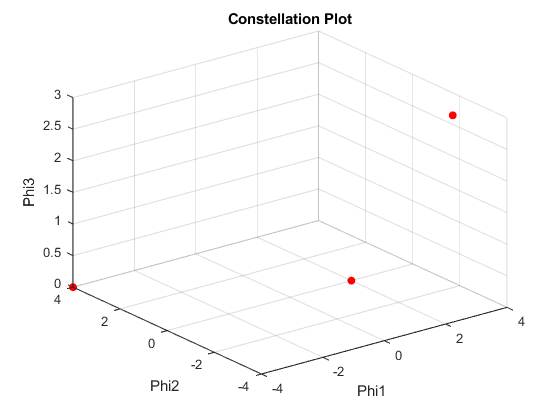

clc;
clear global;
close all;
syms x;
t_low=0;
t_high=3;
s1=2*(heaviside(x)-heaviside(x-1));
s2=4*(-heaviside(x)+heaviside(x-2));
s3=3*(heaviside(x)-heaviside(x-3));
phi=[];
s=[s1,s2,s3];
for i=1:length(s)
f_tilda=s(i);
if i>1
for j=1:i-1
f_tilda=f_tilda-innerProduct(phi(j),f_tilda,t_low,t_high)*phi(j);
end
end
phi=[phi f_tilda/(calc_norm(f_tilda,t_low,t_high))];
end
for i=1:length(s)
for j=1:length(phi)
if(isnan(phi(j))==0)
points(i,j)=innerProduct(phi(j),s(i),t_low,t_high);
end
end
end
figure(1);
for i=1:length(s)
subplot(2,2,i);
fplot(s(i),'r');
xlim([-5 5]);
ylim([-5 5]);
grid on;
xlabel('Time');
ylabel('Amplitude');
title(sprintf('s%d(t)',i));
end
figure(2);
for i=1:length(phi)
hold on;
subplot(2,2,i);
fplot(phi(i),'r');
grid on;
xlim([-5 5]);
ylim([-5 5]);
xlabel('Time(sec)');
ylabel('Amplitude');
title(sprintf('Phi-%d',i));
end
[row col]=size(points);
x=points(:,1);
y=points(:,2);
z=points(:,3);
figure(3);
scatter3(x,y,z,'r','filled');
xlabel('Phi1');
ylabel('Phi2');
zlabel('Phi3');
title('Constellation Plot');
grid on;
function norm=calc_norm(s,t_low,t_high)
norm=sqrt(int(s*s,t_low,t_high));
end
function inner_prod=innerProduct(f1,f2,t_low,t_high)
inner_prod=int(f1*f2,t_low,t_high);
end
  